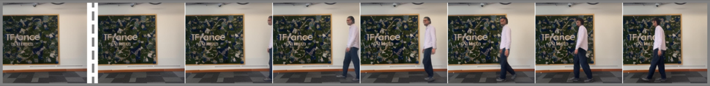
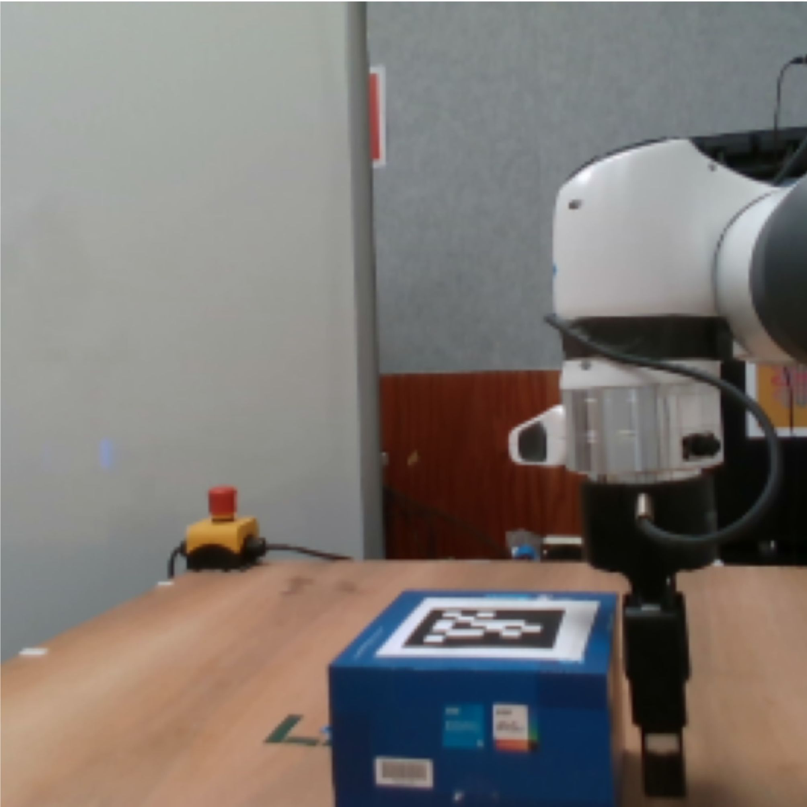
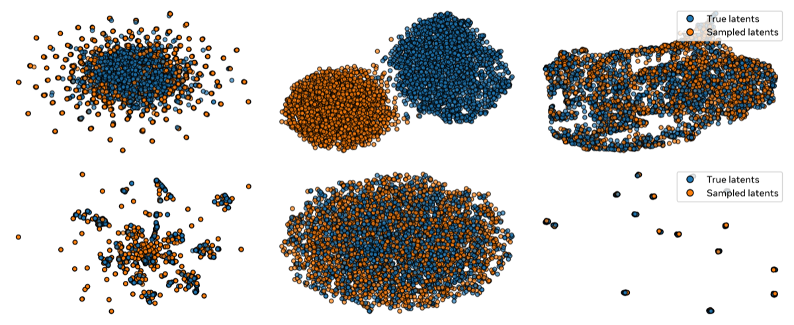

Overview — the logical flow개요 — 전체 논리 흐름
Figures from the paper논문 원본 그림



Comprehensive walkthrough전체 내용 정리
Motivation: breaking the action-label bottleneck동기: 행동 레이블 병목 깨기
Agents that plan must predict the consequences of actions, but the strongest world models (DreamerV3, V-JEPA 2-AC, etc.) assume known action labels. Such labels are scarce: the vast majority of online video is unlabeled and contains heterogeneous embodiments. Latent action models (LAMs) sidestep this by discovering an action space from video alone, but prior LAMs were confined to simple simulations, video games, or curated manipulation data, yielding embodiment-specific, non-transferable actions. This work pushes LAMs onto truly in-the-wild video, where 'actions' span ego-centric camera motion, people dancing, and objects entering frame (Figure 1).
계획하는 에이전트는 행동의 결과를 예측해야 하지만, 가장 강력한 세계 모델들(DreamerV3, V-JEPA 2-AC 등)은 알려진 행동 레이블을 가정한다. 이런 레이블은 희소하다. 온라인 영상의 대부분은 레이블이 없고 이질적인 신체 형태를 담는다. 잠재 행동 모델(LAM)은 영상만으로 행동 공간을 발견해 이를 우회하지만, 기존 LAM은 단순 시뮬레이션·게임·정제된 조작 데이터에 갇혀 신체에 특화되고 전이 불가능한 행동만 학습했다. 본 연구는 카메라 자기 운동, 춤추는 사람, 화면에 들어오는 객체까지 아우르는(그림 1) 진정한 야생 영상으로 LAM을 끌어올린다.
Latent-action formulation잠재 행동 정식화
An inverse dynamics model (IDM) g_phi looks at consecutive latent states (s_t, s_{t+1}) and infers a latent action z_t that explains the transition. A world (forward) model p_psi then predicts s_{t+1} from the past states s_{0:t} and z_t. Because the IDM peeks at the future to infer z_t, there is a built-in 'causal leak' risk: z_t could simply copy the entire next frame. The whole design therefore hinges on constraining how much information z_t may carry, so it captures abstract, action-relevant content rather than the literal next state or environmental noise (swaying leaves, etc.).
역동역학 모델(IDM) g_phi는 연속된 잠재 상태 (s_t, s_{t+1})를 보고 전이를 설명하는 잠재 행동 z_t를 추론한다. 그다음 세계(순방향) 모델 p_psi가 과거 상태 s_{0:t}와 z_t로부터 s_{t+1}을 예측한다. IDM이 z_t를 추론하려고 미래를 들여다보기 때문에 내재된 '인과 누출' 위험이 있다. z_t가 다음 프레임 전체를 그냥 복사할 수 있는 것이다. 따라서 전체 설계의 핵심은 z_t가 담을 수 있는 정보량을 제약하여, 문자 그대로의 다음 상태나 환경 잡음(흔들리는 나뭇잎 등)이 아니라 추상적이고 행동과 관련된 내용을 포착하게 하는 데 있다.
Model architecture모델 구조
Frames are encoded by a frozen frame-causal V-JEPA 2-L encoder into latent states; only dynamics are learned. The world model p_psi is a ViT-L with RoPE positional embeddings, conditioned on the latent action via an AdaLN-zero mechanism adapted to condition frame-wise rather than sequence-wise. Latent actions z_t are 128-dimensional continuous vectors by default. For qualitative/perceptual analysis, a separate ViT-L frame-causal video decoder (V-JEPA 2-style plus a patch-to-pixel linear layer) is trained with an L1 + perceptual loss to reconstruct pixels from latent states.
프레임은 동결된 프레임 인과 V-JEPA 2-L 인코더로 잠재 상태로 인코딩되며, 동역학만 학습된다. 세계 모델 p_psi는 RoPE 위치 임베딩을 갖춘 ViT-L로, 시퀀스 단위가 아니라 프레임 단위로 조건화하도록 변형한 AdaLN-zero 메커니즘을 통해 잠재 행동에 조건화된다. 잠재 행동 z_t는 기본적으로 128차원 연속 벡터다. 정성적·지각적 분석을 위해, 잠재 상태에서 픽셀을 복원하도록 L1+지각 손실로 학습한 별도의 ViT-L 프레임 인과 비디오 디코더(V-JEPA 2 구조에 패치→픽셀 선형층 추가)를 둔다.
Information regularization: the core study정보 정규화: 핵심 연구
The training loss is L = ||s_{t+1} - p_psi(s_{0:t}, z_t)||_1 + L_z(z_t). Three regularizers are compared. (1) Sparsity: an L1 penalty plus a Variance-Covariance-Mean (VCM) term inspired by VICReg (coefficients lambda_l2=1, lambda_V=0.1, lambda_C=0.001, lambda_M=0.1), tuning lambda_1 to set capacity. (2) Noise (VAE-like): a KL term D_KL(q(z|s_t,s_{t+1}) || N(0,1)) that injects noise and shrinks the latent's norm, with beta controlling capacity. (3) Discretization: standard vector quantization with codebook reset (UniVLA-style), as the conventional baseline. Continuous schemes can smoothly span low-to-high capacity by changing one coefficient; VQ cannot scale capacity and stays near a deterministic model.
학습 손실은 L = ||s_{t+1} - p_psi(s_{0:t}, z_t)||_1 + L_z(z_t)이다. 세 가지 정규화를 비교한다. (1) 희소성: VICReg에서 영감받은 분산-공분산-평균(VCM) 항(계수 lambda_l2=1, lambda_V=0.1, lambda_C=0.001, lambda_M=0.1)에 L1 페널티를 더하고, lambda_1로 용량을 조절. (2) 노이즈(VAE식): 잡음을 주입하고 잠재 벡터의 노름을 줄이는 KL 항 D_KL(q(z|s_t,s_{t+1}) || N(0,1)), beta로 용량 조절. (3) 이산화: 코드북 리셋을 적용한 표준 벡터 양자화(UniVLA식)를 관례적 기준선으로 사용. 연속 방식은 계수 하나로 저용량부터 고용량까지 매끄럽게 조절되지만, VQ는 용량을 확장하지 못하고 결정론적 모델에 머문다.
Training data and scale학습 데이터와 규모
Models train on YouTubeTemporal-1B using 16-frame clips at 4fps, batch size 1024, for 30,000 iterations with teacher forcing for efficiency. Optimization uses Muon (lr 0.02) alongside AdamW (lr 6.25e-4), weight decay 0.04, 10% linear warmup then cosine decay. Default training takes ~12 hours on 64 H100 GPUs. Notably, the default recipe sees each video on average twice but only ~1% of total frames—and the data-scaling study shows this 1% is roughly where performance starts to degrade from too small a training set.
모델은 YouTubeTemporal-1B에서 4fps의 16프레임 클립, 배치 크기 1024로 효율을 위해 teacher forcing을 써서 30,000 반복 학습한다. 최적화는 Muon(lr 0.02)과 AdamW(lr 6.25e-4)를 함께 쓰고, 가중치 감쇠 0.04, 10% 선형 웜업 후 코사인 감쇠를 적용한다. 기본 학습은 64대 H100 GPU로 약 12시간이다. 흥미롭게도 기본 레시피는 영상을 평균 두 번 보지만 전체 프레임의 약 1%만 보며, 데이터 스케일링 연구는 이 1%가 학습셋이 너무 작아 성능이 저하되기 시작하는 지점임을 보인다.
Probing latent actions: leakage and transfer잠재 행동 검증: 누출과 전이
Two raw-latent tests are introduced (Figure 5). Future leakage: artificially stitching videos to force a scene cut—if z_t copied the next frame, the prediction error would not spike. On Kinetics (Table 1), error more than doubles for every model (×2.0–×2.5 in LPIPS), so no model cheats. Cycle consistency: infer actions on video A, apply to B, re-infer, reapply to A; small error growth means actions transfer. On Kinetics/RECON (Table 2) increases are minor (≈×1.0–×1.34). Higher capacity transfers slightly worse but still ends up more accurate. Qualitatively (Figures 7-8), a man's leftward motion transfers onto a flying ball and is correctly re-inferred, and a localized locomotion action animates only the person nearest the original mover.
두 가지 원시 잠재 검증이 제시된다(그림 5). 미래 누출: 영상을 인위적으로 이어붙여 장면 전환을 강제한다. 만약 z_t가 다음 프레임을 복사했다면 예측 오차가 급증하지 않을 것이다. Kinetics(표 1)에서 모든 모델의 오차가 두 배 이상(LPIPS 기준 ×2.0~×2.5) 증가하므로, 어떤 모델도 부정행위를 하지 않는다. 순환 일관성: 영상 A에서 행동을 추론해 B에 적용하고, 다시 추론해 A에 재적용한다. 작은 오차 증가는 행동이 전이됨을 뜻한다. Kinetics/RECON(표 2)에서 증가폭은 미미하다(약 ×1.0~×1.34). 고용량은 전이가 약간 나쁘지만 최종 정확도는 여전히 더 높다. 정성적으로(그림 7-8) 한 남자의 왼쪽 움직임이 날아가는 공에 전이되어 올바르게 재추론되고, 국소 이동 행동은 원래 움직인 사람과 가장 가까운 인물만 움직이게 한다.
What embodiment emerges: camera-relative, spatially-localized어떤 신체가 나타나는가: 카메라 기준의 공간 국소화
Because natural videos share no common embodiment, the only invariant across them is the camera. The model therefore learns generic actions defined relative to the camera and localized in space—'movement at this camera-relative location' rather than 'movement of this object type.' The authors frame this as a strength: this abstraction is precisely what enables motion transfer between semantically unrelated objects (human to ball), which object-tied actions could never achieve. It also explains the minor next-frame information seen under scene cuts—it is the residue of objects entering and leaving frames, not cheating.
자연 영상에는 공통된 신체가 없으므로 전반에 걸친 유일한 불변량은 카메라다. 따라서 모델은 카메라를 기준으로 정의되고 공간적으로 국소화된 일반 행동, 즉 '이 객체 유형의 움직임'이 아니라 '이 카메라 기준 위치에서의 움직임'을 학습한다. 저자들은 이를 장점으로 본다. 이 추상화야말로 의미적으로 무관한 객체 사이의 움직임 전이(사람→공)를 가능하게 하며, 객체에 묶인 행동으로는 결코 달성할 수 없다. 또한 장면 전환에서 관찰된 미미한 다음 프레임 정보가 부정행위가 아니라 화면에 드나드는 객체의 잔여물임을 설명한다.
From latent actions to planning: the controller잠재 행동에서 계획으로: 컨트롤러
To use latent actions as a universal control interface, a lightweight controller maps known real actions to latent ones with an L2 loss. Since latent actions are camera-relative, actions alone are insufficient—the controller must also see a past representation (2 self-attention blocks over the last frame s_{t-1}, then cross-attention with MLP-embedded actions); without it the controller collapses to a 'no-movement' action. Frames are duplicated to give a clean one-action-per-frame mapping (the world model uses one latent per two frames). Controller rollouts closely match IDM rollouts but are slightly more conservative; movement is applied correctly though appearance degrades over long unrolls.
잠재 행동을 보편적 제어 인터페이스로 쓰기 위해, 가벼운 컨트롤러가 알려진 실제 행동을 L2 손실로 잠재 행동에 매핑한다. 잠재 행동이 카메라 기준이므로 행동만으로는 부족하다. 컨트롤러는 과거 표현도 봐야 한다(마지막 프레임 s_{t-1}에 대한 self-attention 2블록 후 MLP로 임베딩된 행동과 cross-attention). 이것이 없으면 컨트롤러는 '움직임 없음' 행동으로 붕괴한다. 프레임을 복제해 프레임당 행동 하나의 깔끔한 매핑을 만든다(세계 모델은 두 프레임당 잠재 하나 사용). 컨트롤러 롤아웃은 IDM 롤아웃과 거의 일치하나 약간 더 보수적이다. 움직임은 올바르게 적용되지만 긴 전개에서 외형은 열화된다.
Experiments and metrics: DROID and RECON planning실험과 지표: DROID와 RECON 계획
Planning uses the Cross-Entropy Method. On DROID (Franka Panda manipulation, horizon H=3, N=300 samples, K=10 elites, 15 iters, 64 episodes) the metric is goal distance delta-xyz. Best in-the-wild-only models reach 0.10–0.13 m versus 0.15 for action-conditioned V-JEPA 2-AC and 0.05 for the in-domain V-JEPA 2 + WM upper bound—i.e., parity with the action-conditioned baseline despite never seeing labels. On RECON navigation (NWM protocol, H=8, RPE metric) the best latent models reach RPE ≈0.40, beating policy baseline NoMaD (0.52) and approaching NWM (0.35). Crucially, mixing in even 10% DROID data lifts delta-xyz to 0.06–0.09, matching the 0.05 in-domain world model with labeled actions.
계획은 교차 엔트로피 방법(CEM)을 쓴다. DROID(Franka Panda 조작, 지평 H=3, 표본 N=300, 엘리트 K=10, 15회 반복, 64 에피소드)에서 지표는 목표 거리 delta-xyz다. 야생 영상만으로 학습한 최고 모델은 0.10~0.13 m로, 행동 조건부 V-JEPA 2-AC의 0.15, 도메인 내 상한선 V-JEPA 2 + WM의 0.05와 비교된다. 즉 레이블을 전혀 보지 않고도 행동 조건부 기준선과 동등하다. RECON 내비게이션(NWM 프로토콜, H=8, RPE 지표)에서 최고 잠재 모델은 RPE 약 0.40으로 정책 기준선 NoMaD(0.52)를 능가하고 NWM(0.35)에 근접한다. 결정적으로 DROID 데이터를 단 10%만 섞어도 delta-xyz가 0.06~0.09로 올라, 레이블 행동을 쓰는 도메인 내 세계 모델의 0.05와 맞먹는다.
Ablations, scaling, and a key non-monotonicity제거 실험, 스케일링, 핵심 비단조성
A recurring lesson: prediction quality on in-the-wild video (latent capacity) does not monotonically predict downstream rollout or planning quality. For both sparse and noisy latents, mid-capacity is best—over-constrained actions lack information, under-constrained ones leak too much. Strikingly, noisy latents give the best planning even when their rollouts look worst. On the simple action spaces of DROID/RECON, even discrete VQ works adequately. Scaling (Figure 12): bigger models, longer training, and more data all improve IDM prediction on natural video, but for planning, training time matters most, model size mainly helps noisy latents, and data quantity shows no clear trend.
반복되는 교훈: 야생 영상에서의 예측 품질(잠재 용량)이 하류 롤아웃이나 계획 품질을 단조롭게 예측하지 않는다. 희소·노이즈 잠재 모두 중간 용량이 최적이다. 과도하게 제약하면 정보가 부족하고, 덜 제약하면 너무 많이 누출된다. 인상적이게도 노이즈 잠재는 롤아웃이 가장 나빠 보일 때조차 계획 성능이 가장 좋다. DROID/RECON의 단순한 행동 공간에서는 이산 VQ조차 적절히 작동한다. 스케일링(그림 12): 더 큰 모델, 더 긴 학습, 더 많은 데이터 모두 자연 영상에서의 IDM 예측을 개선하지만, 계획에서는 학습 시간이 가장 중요하고 모델 크기는 주로 노이즈 잠재에 도움 되며 데이터 양은 뚜렷한 추세를 보이지 않는다.
Limitations the authors admit저자들이 인정하는 한계
The authors flag three honest gaps. (1) Static information constraint: a single fixed regularization coefficient is used, but videos vary in action complexity (some deterministic), so adaptive, per-video constraints would yield better-calibrated actions. (2) Planning in latent space: they only use latent actions through a controller mapping known actions; directly sampling or planning in the high-dimensional structured latent action space remains largely future work (they suggest diffusion models). (3) Frozen two-stage training: the world model sits on V-JEPA 2 representations not designed for prediction, which can hinder IDM training and prediction quality; folding latent actions into single-stage encoder + world-model pretraining is an open direction.
저자들은 세 가지 솔직한 한계를 짚는다. (1) 정적 정보 제약: 단일 고정 정규화 계수를 쓰지만 영상마다 행동 복잡도가 다르므로(일부는 결정론적), 영상별 적응적 제약이 더 잘 보정된 행동을 낼 것이다. (2) 잠재 공간에서의 계획: 알려진 행동을 매핑하는 컨트롤러를 통해서만 잠재 행동을 쓴다. 고차원 구조적 잠재 행동 공간에서 직접 샘플링하거나 계획하는 것은 대체로 향후 과제로 남는다(확산 모델 제안). (3) 동결된 2단계 학습: 세계 모델이 예측을 염두에 두고 설계되지 않은 V-JEPA 2 표현 위에 놓여 IDM 학습과 예측 품질을 저해할 수 있다. 잠재 행동을 단일 단계 인코더+세계 모델 사전학습에 통합하는 것이 열린 방향이다.
Key results — DROID manipulation planning핵심 결과 — DROID 조작 계획
| Model / Latent | Capacity | delta-xyz (m) |
|---|---|---|
| Sparse | Mid / High | 0.18 / 0.13 |
| Noisy | Mid / High | 0.11 / 0.10 |
| Discrete (VQ) | Low / High | 0.18 / 0.14 |
| V-JEPA 2-AC (action-conditioned) | N/A | 0.15 |
| V-JEPA 2 + WM (in-domain upper bound) | N/A | 0.05 |
| +10% DROID mix (Noisy) | N/A | 0.09 |
All numbers are exactly as reported in Tables S1 and S3. The best label-free models (noisy high-capacity, 0.10) match or beat the action-conditioned V-JEPA 2-AC baseline (0.15) despite never seeing action labels; the in-domain world model with labels (0.05) remains an upper bound. Lower is better throughout.
모든 수치는 표 S1과 S3에 보고된 그대로다. 레이블 없는 최고 모델(노이즈 고용량, 0.10)은 행동 레이블을 전혀 보지 않고도 행동 조건부 V-JEPA 2-AC 기준선(0.15)과 동등하거나 능가한다. 레이블을 쓰는 도메인 내 세계 모델(0.05)은 상한선으로 남는다. 전반적으로 낮을수록 좋다.
✅ Strengths✅ 강점
Honest, falsifiable diagnostic for the central failure mode (future leakage)핵심 실패 양상(미래 정보 누출)에 대한 정직하고 반증 가능한 진단
The paper confronts the standard objection to IDM-based latent actions head-on: that the latent z_t can 'cheat' by copying the next frame. It designs a concrete, falsifiable test (Fig. 5a, Table 1) by stitching abrupt scene changes into videos and measuring the prediction-error spike. All variants show error more than doubling (×2.0–×2.5 LPIPS on Kinetics), and the authors explicitly label this a 'necessary but not sufficient' condition (footnote 3), rather than overclaiming it as proof of no leakage. This is methodologically careful adversarial self-testing.
이 논문은 IDM 기반 잠재 행동에 대한 표준적 반론, 즉 잠재 z_t가 다음 프레임을 복사하여 '속일' 수 있다는 문제를 정면으로 다룬다. 영상에 급격한 장면 전환을 이어붙이고 예측 오차의 급증을 측정하는 구체적이고 반증 가능한 테스트(그림 5a, 표 1)를 설계했다. 모든 변형에서 오차가 두 배 이상 증가하며(Kinetics LPIPS 기준 ×2.0–×2.5), 저자들은 이를 누출이 없다는 증명으로 과장하지 않고 '필요하지만 충분하지 않은' 조건이라고 명시(각주 3)한다. 이는 방법론적으로 신중한 적대적 자기검증이다.
Systematic, controlled comparison of regularization families정규화 계열에 대한 체계적이고 통제된 비교
Rather than proposing a single trick, the work treats information regularization of latent actions as the object of study and compares three principled families — sparsity (L1+VCM), noise (VAE-like KL), and discretization (VQ) — across a swept capacity axis with a disciplined stopping criterion (sweep until latents act like noise / extra capacity stops reducing error / codebook underutilized). The finding that continuous-but-constrained latents dominate VQ at scale, while VQ still suffices for the simple downstream action spaces, is a nuanced and well-supported result that informs future LAM design.
단일 기법을 제안하는 대신, 이 연구는 잠재 행동의 정보 정규화 자체를 연구 대상으로 삼아 세 가지 원칙적 계열 — 희소성(L1+VCM), 노이즈(VAE형 KL), 이산화(VQ) — 을 용량 축을 따라 스윗하며 규율 있는 정지 기준(잠재가 노이즈처럼 작동할 때까지 / 용량 증가가 오차를 줄이지 못할 때까지 / 코드북 미활용)으로 비교한다. 대규모에서는 연속이지만 제약된 잠재가 VQ를 능가하나 단순한 다운스트림 행동 공간에서는 VQ로도 충분하다는 발견은 미묘하고 잘 뒷받침된 결과로, 향후 LAM 설계에 시사점을 준다.
The camera-relative locality finding is a genuine, well-evidenced conceptual contribution카메라 상대적 국소성 발견은 진정성 있고 근거가 충분한 개념적 기여
The observation that, absent a common embodiment, learned latent actions become spatially-localized and camera-relative is supported by a clean qualitative probe (Fig. 8: applying a localized locomotion action animates only the person nearest the original mover) and by the cross-object transfer demonstrations (Fig. 7: human motion transferred to a flying ball). Crucially the authors turn this into a falsifiable controller-design prediction — that an action-only controller without past-frame context should fail because the same real action maps to different latents depending on camera pose — and confirm it (Fig. S13, representation-less controller leaves the arm static). The mechanism and its evidence cohere.
공통 임바디먼트가 없을 때 학습된 잠재 행동이 공간적으로 국소화되고 카메라 상대적이 된다는 관찰은 깔끔한 정성 탐침(그림 8: 국소 이동 행동을 적용하면 원래 움직인 사람과 가장 가까운 사람만 움직임)과 객체 간 전이 시연(그림 7: 사람의 움직임을 날아가는 공으로 전이)으로 뒷받침된다. 결정적으로 저자들은 이를 반증 가능한 컨트롤러 설계 예측 — 동일한 실제 행동이 카메라 자세에 따라 다른 잠재로 매핑되므로 과거 프레임 맥락 없는 행동 전용 컨트롤러는 실패해야 한다 — 으로 전환하고 이를 확인한다(그림 S13, 표현 없는 컨트롤러는 팔을 정지 상태로 둠). 메커니즘과 증거가 일관된다.
Scaling study reports a negative/nuanced result instead of a clean win스케일링 연구가 깔끔한 승리 대신 부정적/미묘한 결과를 보고
The scaling analysis (Fig. 12) honestly reports that while IDM prediction error on natural videos improves monotonically with model size, training time, and data, downstream planning improves mainly with training time, with model size mattering only for noisy latents and data quantity showing no significant trend. The authors connect this to the limitation that downstream benchmarks evaluate only simple actions, and corroborate the muted model-size effect against prior work (Ye et al., 2025). Reporting that scale does not straightforwardly transfer to the task that matters is the opposite of an overclaim.
스케일링 분석(그림 12)은 자연 영상에서의 IDM 예측 오차가 모델 크기, 학습 시간, 데이터에 따라 단조 개선되는 반면, 다운스트림 계획은 주로 학습 시간에 따라 개선되고 모델 크기는 노이즈 잠재에서만 의미가 있으며 데이터량은 유의미한 경향이 없음을 정직하게 보고한다. 저자들은 이를 다운스트림 벤치마크가 단순한 행동만 평가한다는 한계와 연결하고, 미미한 모델 크기 효과를 선행 연구(Ye 등, 2025)와 대조해 입증한다. 스케일이 정작 중요한 과제로 곧바로 이전되지 않는다고 보고하는 것은 과장의 반대이다.
Honest, falsifiable diagnostic metrics for the core failure modes핵심 실패 양상에 대한 정직하고 반증 가능한 진단 지표
The paper does not just assert that latent actions are well-behaved; it designs targeted probes. The future-leakage test (stitching scene cuts and showing prediction error more than doubles, Table 1, x2.0-2.5 across all settings) and the cycle-consistency transfer test (Table 2, x1.03-1.34 LPIPS increase) are concrete, falsifiable, and applied uniformly across sparse/noisy/discrete variants. The authors explicitly flag that lack of a leakage spike is a 'necessary but not sufficient' condition, which is unusually careful.
이 논문은 잠재 행동이 잘 작동한다고 단순히 주장하지 않고 표적화된 검증을 설계한다. 미래 누출 검사(장면 전환을 이어붙여 예측 오차가 두 배 이상 증가함을 보임, 표 1, 모든 설정에서 x2.0-2.5)와 순환 일관성 전이 검사(표 2, LPIPS x1.03-1.34 증가)는 구체적이고 반증 가능하며 sparse/noisy/discrete 변형 전반에 동일하게 적용된다. 저자들은 누출 스파이크의 부재가 '필요하지만 충분하지 않은' 조건임을 명시적으로 밝히는데, 이는 보기 드물게 신중한 태도이다.
Systematic sweep over regularization strength rather than a single operating point단일 작동점이 아닌 정규화 강도에 대한 체계적 스윕
Instead of reporting one tuned model, the authors sweep lambda_l1 over 8 values and beta over 8 values and plot the full capacity-vs-performance curve (Figs 4, 11, 12). This surfaces a genuinely non-obvious and useful finding: in-the-wild IDM prediction error is NOT monotonically aligned with downstream planning quality, and a mid-capacity 'middle ground' is best. Reporting this anti-monotonic relationship is more informative than a single number and partially guards against cherry-picking.
하나의 튜닝된 모델을 보고하는 대신 저자들은 lambda_l1를 8개 값, beta를 8개 값에 대해 스윕하고 용량-성능 곡선 전체를 도시한다(그림 4, 11, 12). 이를 통해 진정으로 비자명하고 유용한 발견이 드러난다: in-the-wild IDM 예측 오차는 다운스트림 플래닝 품질과 단조적으로 정렬되지 않으며 중간 용량의 '중간 지점'이 최적이다. 이 반단조 관계를 보고하는 것은 단일 수치보다 정보량이 많고 체리피킹을 부분적으로 방지한다.
Cross-domain downstream evaluation on two genuinely different control settings두 가지 본질적으로 다른 제어 환경에서의 교차 도메인 다운스트림 평가
The planning evaluation spans both manipulation (DROID, fixed camera, moving agent) and egocentric navigation (RECON, moving camera), each using the established external protocols (Terver et al. for DROID; NWM/Bar et al. for RECON) and external baselines (V-JEPA 2-AC, NoMaD, NWM). Reusing prior protocols rather than inventing a bespoke favorable one makes the comparison harder to game and tests whether a single in-the-wild action space serves structurally distinct embodiments.
플래닝 평가는 조작(DROID, 고정 카메라, 움직이는 에이전트)과 자기중심 내비게이션(RECON, 움직이는 카메라)을 모두 포괄하며 각각 확립된 외부 프로토콜(DROID는 Terver 등, RECON은 NWM/Bar 등)과 외부 베이스라인(V-JEPA 2-AC, NoMaD, NWM)을 사용한다. 자체적으로 유리한 프로토콜을 만들지 않고 기존 프로토콜을 재사용한 점은 비교를 조작하기 어렵게 하며, 단일 in-the-wild 행동 공간이 구조적으로 다른 임베디먼트에 작동하는지 시험한다.
⚔️ Weaknesses, gaps & suspicious points⚔️ 약점·부족한 점·의심 포인트
DROID 'planning' metric measures action imitation, not goal achievementDROID '계획' 지표는 목표 달성이 아니라 행동 모방을 측정
The headline DROID result (∆xyz, Table S1/Fig. 11) is defined (Eq. 3, App. A) as the L1 distance between the cumulative *planned* action vector and the cumulative *groundtruth* action from the dataset — i.e. how close the planner's chosen displacement is to the displacement a human demonstrator used. It is NOT executed on a robot or simulator and never measures whether the goal state is reached, whether the arm avoids obstacles, or task success. A model can score well by reproducing dataset displacements while its rollouts are physically degenerate (the paper itself notes 'physical appearance degrades over time' and arms failing to appear, Fig. 10/S12). The central claim of 'solving planning tasks' is thus evaluated by a proxy that cannot falsify whether the latent actions are actually controllable toward goals.
대표적 DROID 결과(∆xyz, 표 S1/그림 11)는 (식 3, 부록 A) 누적 *계획* 행동 벡터와 데이터셋의 누적 *정답* 행동 사이의 L1 거리, 즉 계획자가 선택한 변위가 인간 시연자의 변위에 얼마나 가까운지로 정의된다. 이는 로봇이나 시뮬레이터에서 실행되지 않으며 목표 상태 도달 여부, 장애물 회피, 과제 성공을 측정하지 않는다. 모델은 롤아웃이 물리적으로 퇴화하더라도(논문 스스로 '물리적 외형이 시간에 따라 열화', 팔이 나타나지 않음을 언급, 그림 10/S12) 데이터셋 변위를 재현하여 좋은 점수를 받을 수 있다. 따라서 '계획 과제 해결'이라는 핵심 주장은 잠재 행동이 실제로 목표를 향해 제어 가능한지를 반증할 수 없는 대리 지표로 평가된다.
'Comparable to action-conditioned baselines' rests on a single weak comparator and ignores the strong one'행동 조건부 기준선과 유사' 주장은 약한 비교 대상 하나에 의존하고 강한 대상은 무시
The abstract/conclusion claim 'similar performance as action-conditioned baselines' is supported only by matching V-JEPA 2-AC (∆xyz 0.15 vs best in-the-wild ~0.10–0.13, Table S1). But the truly comparable upper bound, V-JEPA 2 + WM (Terver et al.), scores 0.05 — roughly 2–3× better — and the labeled-action baseline on RECON (NWM RPE 0.35 vs best latent 0.40) also beats the method. Beating only the weaker labeled baseline while being decisively beaten by the stronger one does not license a general 'comparable to action-conditioned baselines' framing; the comparator was selected favorably.
초록/결론의 '행동 조건부 기준선과 유사한 성능' 주장은 V-JEPA 2-AC와 동등하다는 것(∆xyz 0.15 대 최고 in-the-wild ~0.10–0.13, 표 S1)만으로 뒷받침된다. 그러나 진정한 비교 상한선인 V-JEPA 2 + WM(Terver 등)은 0.05로 약 2–3배 우수하며, RECON의 레이블 행동 기준선(NWM RPE 0.35 대 최고 잠재 0.40)도 제안 방법을 앞선다. 더 약한 레이블 기준선만 이기고 더 강한 것에는 확실히 패하는데도 일반적인 '행동 조건부 기준선과 유사'라는 프레이밍은 정당화되지 않으며, 비교 대상이 유리하게 선택되었다.
Ego-motion vs object-motion entanglement is never disentangled or quantified자기운동 대 객체운동 얽힘이 분리되거나 정량화되지 않음
The paper's own framing (Fig. 1) mixes camera/ego motion, hand motion, and exocentric events (people dancing, objects entering) into one 'action' distribution, but never separates them. The transferability and cycle-consistency metrics (Tables 1–2) are aggregate LPIPS over arbitrary natural-video pairs where, as the authors admit, 'transfer is not well defined' and 'absolute gaps are hard to interpret'. Because the latents are shown to be camera-relative *spatial* transforms, a low cycle-consistency error could be largely driven by reproducing global ego-motion/camera pans (which transfer trivially) rather than genuine object/agent actions. No experiment isolates static-camera-with-moving-object cases from moving-camera cases to show the controllable signal is object action rather than entangled ego-motion.
논문 자체의 프레이밍(그림 1)은 카메라/자기운동, 손 동작, 외향적 사건(춤추는 사람, 들어오는 객체)을 하나의 '행동' 분포로 섞지만 결코 분리하지 않는다. 전이성과 순환 일관성 지표(표 1–2)는 임의의 자연 영상 쌍에 대한 집계 LPIPS이며, 저자도 인정하듯 '전이가 잘 정의되지 않고' '절대 격차를 해석하기 어렵다'. 잠재가 카메라 상대적 *공간* 변환임이 드러났으므로, 낮은 순환 일관성 오차는 진정한 객체/행위자 행동이 아니라 자명하게 전이되는 전역 자기운동/카메라 패닝을 재현하는 데서 크게 기인할 수 있다. 정지 카메라-이동 객체 사례를 이동 카메라 사례와 분리하여 제어 가능한 신호가 얽힌 자기운동이 아니라 객체 행동임을 보이는 실험이 없다.
No error bars, seeds, or significance anywhere despite tiny eval sets and close numbers작은 평가 셋과 근소한 수치에도 불구하고 오차막대·시드·유의성이 전무
DROID planning uses only 16 validation videos and 64 episodes; the key ∆xyz differences are razor-thin (e.g., noisy mid 0.11 vs high 0.10 vs sparse high 0.13, and the V-JEPA 2-AC tie at 0.15 vs 0.10–0.13). No standard deviations, confidence intervals, or multiple seeds are reported for any table (1, 2, S1, S2, S3) or scaling curve. With CEM stochasticity and 64 episodes, differences this small and the central 'comparable to V-JEPA 2-AC' claim cannot be distinguished from noise. The 'best model is a middle-ground capacity' conclusion in particular hinges on non-monotonic ordering of values that may be within run-to-run variance.
DROID 계획은 검증 영상 16개와 에피소드 64개만 사용하며, 핵심 ∆xyz 차이는 매우 미세하다(예: noisy mid 0.11 대 high 0.10 대 sparse high 0.13, 그리고 0.15 대 0.10–0.13의 V-JEPA 2-AC 동률). 어떤 표(1, 2, S1, S2, S3)나 스케일링 곡선에도 표준편차, 신뢰구간, 복수 시드가 보고되지 않는다. CEM의 확률성과 64 에피소드를 감안하면 이 정도로 작은 차이와 핵심 'V-JEPA 2-AC와 유사' 주장은 노이즈와 구별할 수 없다. 특히 '최고 모델은 중간 용량'이라는 결론은 실행 간 분산 내에 있을 수 있는 값들의 비단조 순서에 의존한다.
The ×2 'no-cheating' threshold is arbitrary and the absolute LPIPS values undercut the controllability story×2 '비부정행위' 임계는 자의적이며 절대 LPIPS 값은 제어 가능성 서사를 약화
The future-leakage conclusion ('no model cheats') relies on error 'more than doubling' under scene cuts, but no baseline establishes what spike a genuinely non-leaking vs leaking model should produce, nor what a ×2 specifically rules out — a model encoding the next frame imperfectly could still show a large spike on out-of-distribution stitched cuts. More tellingly, the *with-change* LPIPS (0.50–0.69) and even some without-change values (sparse/noisy/discrete low at 0.28–0.34) are very high perceptually, and the controller LPIPS on DROID/RECON degrade up to ×1.5; combined with the admitted appearance degradation and arms-failing-to-appear failures, this suggests the latents may carry coarse motion direction but little controllable structure, making 'no leakage' less a virtue than a symptom of weak latents.
미래 누출 결론('어떤 모델도 부정행위하지 않음')은 장면 절단 시 오차가 '두 배 이상' 증가하는 것에 의존하지만, 진정으로 누출이 없는 모델과 누출하는 모델이 각각 어떤 급증을 보여야 하는지, ×2가 구체적으로 무엇을 배제하는지를 정립하는 기준선이 없다 — 다음 프레임을 불완전하게 인코딩하는 모델도 분포 밖 절단에서 큰 급증을 보일 수 있다. 더 시사적으로, 변화 적용 시 LPIPS(0.50–0.69)와 일부 변화 미적용 값(sparse/noisy/discrete low 0.28–0.34)은 지각적으로 매우 높고, DROID/RECON 컨트롤러 LPIPS는 최대 ×1.5까지 열화된다. 인정된 외형 열화 및 팔이 나타나지 않는 실패와 결합하면, 잠재가 거친 움직임 방향은 담되 제어 가능한 구조는 거의 없을 수 있음을 시사하며, '누출 없음'은 미덕이라기보다 약한 잠재의 증상일 수 있다.
Core qualitative claims depend on authors' private videos and unreleased assets핵심 정성 주장이 저자 사적 영상과 미공개 자산에 의존
Several pivotal qualitative demonstrations — Fig. 7 (human-to-ball transfer), Fig. 8 (action locality with two people) — use 'human videos recorded by the authors,' and the DROID planning protocol uses 16 unnamed real-world Franka videos via the protocol of Terver et al. (2025). These cherry-pickable, non-released stimuli underpin the headline transfer/locality and planning claims, while no code, latent checkpoints, or evaluation splits are mentioned as released. Combined with the frozen V-JEPA 2-L dependency and bespoke CEM settings (N, K, I differ between DROID and RECON), independent reproduction or falsification of the central qualitative claims is effectively impossible from the paper alone.
몇몇 핵심 정성 시연 — 그림 7(사람→공 전이), 그림 8(두 사람 행동 국소성) — 은 '저자들이 녹화한 사람 영상'을 사용하고, DROID 계획 프로토콜은 Terver 등(2025)의 절차로 이름 없는 실세계 Franka 영상 16개를 사용한다. 체리피킹 가능하고 공개되지 않은 이 자극들이 대표적 전이/국소성 및 계획 주장을 떠받치지만, 코드·잠재 체크포인트·평가 분할이 공개된다는 언급이 없다. 고정된 V-JEPA 2-L 의존성과 DROID·RECON 간 상이한 맞춤 CEM 설정(N, K, I)과 결합하면, 핵심 정성 주장의 독립적 재현이나 반증은 논문만으로는 사실상 불가능하다.
No comparison to any existing in-the-wild LAM method; the only 'baseline' is the authors' own VQ variant기존 in-the-wild LAM 방법과의 비교 전무; 유일한 '베이스라인'은 저자 자신의 VQ 변형
The headline claim is that continuous constrained latent actions beat 'the common vector quantization.' But the VQ comparison is the authors' own re-implementation inside their identical pipeline (cited as UniVLA-style VQ), not an external LAM system run end-to-end. There is no comparison against published latent-action world models trained at scale (e.g. Genie-family, LAPA, UniVLA, Schmidt & Jiang) on the same data/metric. So the central superiority claim is established only against a self-constructed strawman within one codebase, with no evidence that competing published methods would actually underperform here.
핵심 주장은 연속적·제약된 잠재 행동이 '흔한 벡터 양자화'를 능가한다는 것이다. 그러나 VQ 비교는 저자 자신의 동일 파이프라인 내 재구현(UniVLA식 VQ로 인용)이지 외부 LAM 시스템을 end-to-end로 실행한 것이 아니다. 동일 데이터/지표에서 대규모로 학습된 공개 잠재행동 세계모델(Genie 계열, LAPA, UniVLA, Schmidt & Jiang 등)과의 비교가 없다. 따라서 중심적 우위 주장은 하나의 코드베이스 내 자체 제작 허수아비에 대해서만 성립하며, 경쟁 공개 방법이 실제로 여기서 열등할 것이라는 증거는 없다.
Compute, data, and frozen encoder are all effectively non-reproducible outside Meta연산, 데이터, 고정 인코더 모두 Meta 외부에서 사실상 재현 불가
Training uses 64 H100 GPUs, a frozen V-JEPA 2-L encoder (Meta-internal weights), and YouTubeTemporal-1B (a 1B-clip web-scraped corpus that is not redistributable and whose exact contents vary with link-rot). No code or model-weight release is mentioned anywhere. The data-scaling axis is even labeled in 'years' of video (up to 150 years). An external researcher cannot reproduce any number in the paper, cannot regenerate the dataset, and cannot independently verify the central VQ-vs-continuous comparison. Reproducibility here rests entirely on trust.
학습에 64개 H100 GPU, 고정된 V-JEPA 2-L 인코더(Meta 내부 가중치), YouTubeTemporal-1B(재배포 불가하고 링크 소멸로 내용이 달라지는 10억 클립 웹 코퍼스)를 사용한다. 코드나 모델 가중치 공개는 어디에도 언급되지 않는다. 데이터 스케일링 축은 영상의 '연 단위'(최대 150년)로 표기된다. 외부 연구자는 논문의 어떤 수치도 재현할 수 없고, 데이터셋을 재생성할 수 없으며, 핵심 VQ-연속 비교를 독립적으로 검증할 수 없다. 재현성은 전적으로 신뢰에 의존한다.
'Comparable to action-conditioned baselines' overstates a result that trails the true upper bound by 2-3x with no variance reported'행동 조건부 베이스라인과 비슷' 주장은 실제 상한선에 2-3배 뒤처지고 분산도 보고되지 않은 결과를 과장
On DROID the best latent model reaches delta_xyz 0.10 vs V-JEPA 2-AC 0.15, but the in-domain upper bound V-JEPA 2 + WM is 0.05 (2x better); on RECON the best RPE 0.40 vs NWM 0.35. Crucially, NO error bars, seeds, or confidence intervals are reported anywhere, yet conclusions hinge on gaps as small as 0.10 vs 0.11 vs 0.13 (Table S1) over only 64 episodes drawn from 16 validation videos. The 'comparable performance' headline and the per-row capacity rankings are not statistically defensible without variance, and the model is clearly not comparable to the actual best in-domain system.
DROID에서 최고 잠재 모델은 delta_xyz 0.10으로 V-JEPA 2-AC 0.15 대비 우세하지만, 도메인 내 상한선 V-JEPA 2 + WM은 0.05(2배 우수)이다. RECON에서는 최고 RPE 0.40 대 NWM 0.35이다. 결정적으로 오차 막대·시드·신뢰구간이 어디에도 보고되지 않으나, 결론은 16개 검증 영상에서 추출한 64개 에피소드에 대해 0.10 대 0.11 대 0.13(표 S1)처럼 작은 차이에 의존한다. 분산 없이는 '비슷한 성능' 표제와 행별 용량 순위가 통계적으로 방어 불가하며, 모델이 실제 최고 도메인 내 시스템과 비슷하지 않음은 명백하다.
Transfer is largely asserted via hand-picked, author-recorded qualitative clips, not measured at scale전이는 대규모 측정이 아닌, 저자가 직접 녹화한 선별 정성 클립으로 주로 주장됨
The most striking transfer claims (human-to-flying-ball motion transfer, person-entering-scene, localized animation of one of two people) come from figures using 'videos recorded by the authors' (Figs 7, 8) and curated 'highest quality unrollings' (Fig 3 caption explicitly says 'highest quality'). The only quantitative transfer metric is cycle-consistency, which the authors themselves concede gives 'absolute gaps that are hard to interpret' and is 'not well defined on random natural videos.' There is no held-out, quantitative, large-N transfer benchmark, so the central 'actions transfer across embodiments' claim is anecdotal and selection-biased.
가장 인상적인 전이 주장(사람→날아가는 공 동작 전이, 사람 등장, 두 사람 중 하나만 국소 애니메이션)은 '저자가 녹화한 영상'(그림 7, 8)과 선별된 '최고 품질 언롤링'(그림 3 캡션이 명시적으로 'highest quality'라 함)을 사용한 그림에서 나온다. 유일한 정량 전이 지표인 순환 일관성은 저자 스스로 '절대 격차를 해석하기 어렵다', '무작위 자연 영상에서 잘 정의되지 않는다'고 인정한다. 보류 세트 기반의 대규모 정량 전이 벤치마크가 없어 핵심 '행동이 임베디먼트 간 전이된다' 주장은 일화적이고 선택 편향적이다.
Static regularization coefficient admitted as suboptimal, yet no adaptive alternative is tested정적 정규화 계수의 비최적성을 인정하면서도 적응적 대안은 실험하지 않음
The limitations section states each video has actions of different complexity (some deterministic) and that a static coefficient is therefore mis-calibrated; the body confirms the optimal capacity differs per video and per downstream task (the anti-monotonic curve). This is a core methodological weakness the paper raises about itself but leaves entirely as future work, with no even-minimal experiment (e.g., per-clip adaptive beta, KL-annealing, or a learned gate) to show the problem is tractable. The reported best operating point is thus a hand-tuned compromise, and the 'best' regularization differs across DROID vs RECON vs in-the-wild error, undermining any single recommended setting.
한계 절은 각 영상이 서로 다른 복잡도(일부는 결정론적)의 행동을 가지므로 정적 계수가 잘못 보정된다고 밝히며, 본문은 최적 용량이 영상별·다운스트림 과제별로 다름(반단조 곡선)을 확인한다. 이는 논문이 스스로 제기하는 핵심 방법론적 약점이나, 문제의 해결 가능성을 보이는 최소한의 실험(클립별 적응 beta, KL 어닐링, 학습된 게이트 등)도 없이 전적으로 향후 과제로 남겨둔다. 따라서 보고된 최적 작동점은 수작업 타협이며, '최적' 정규화가 DROID 대 RECON 대 in-the-wild 오차에서 달라져 단일 권장 설정의 근거를 약화시킨다.
Domain coverage of the planning evaluation contradicts the 'in-the-wild action diversity' thesis플래닝 평가의 도메인 커버리지가 'in-the-wild 행동 다양성' 논지와 모순
The paper's thesis (Fig 1) is that in-the-wild data captures rich actions (people dancing, objects entering) far beyond navigation/manipulation. Yet every quantitative downstream result is on exactly the two narrow regimes the paper claims to transcend: low-dimensional translational manipulation (DROID, additive delta_xyz) and straight-line navigation (RECON, where they even 'assume trajectories as a straight line' and plan a single action). The authors note 'even discrete latent actions work well' on these simple action spaces and that scaling gains are invisible downstream because tasks 'mainly evaluate simple actions.' So the rich-action capability is never quantitatively cashed out in any task that requires it; the evaluation cannot falsify the claim that the model handles complex in-the-wild actions usefully.
논문의 논지(그림 1)는 in-the-wild 데이터가 내비게이션/조작을 훨씬 넘어서는 풍부한 행동(춤추는 사람, 등장하는 물체)을 포착한다는 것이다. 그러나 모든 정량 다운스트림 결과는 논문이 초월한다고 주장하는 바로 그 두 협소 영역, 즉 저차원 병진 조작(DROID, 가산적 delta_xyz)과 직선 내비게이션(RECON, '궤적을 직선으로 가정'하고 단일 행동만 플래닝)에 있다. 저자들은 이 단순 행동 공간에서 '이산 잠재 행동도 잘 작동'하며 과제가 '주로 단순 행동을 평가'하기에 스케일링 이득이 다운스트림에서 보이지 않는다고 언급한다. 따라서 풍부한 행동 능력은 그것을 요구하는 어떤 과제에서도 정량적으로 입증되지 않으며, 평가가 복잡한 in-the-wild 행동을 유용하게 다룬다는 주장을 반증할 수 없다.
What to take away핵심 정리
Continuous, information-constrained latent actions (sparsity or VAE noise) scale to in-the-wild video and capture rich actions; conventional vector quantization cannot expand its capacity and stays near a deterministic model.
연속적이고 정보가 제약된 잠재 행동(희소성 또는 VAE 노이즈)은 야생 영상으로 확장되어 풍부한 행동을 포착한다. 관례적인 벡터 양자화는 용량을 확장하지 못하고 결정론적 모델에 머문다.
With no shared embodiment in natural video, actions become camera-relative and spatially-localized—a feature, not a bug, since it enables transferring motion across unrelated objects (human to ball).
자연 영상에 공통 신체가 없으면 행동은 카메라 기준의 공간 국소적 변환이 된다. 이는 결함이 아니라 무관한 객체 사이(사람→공)의 움직임 전이를 가능하게 하는 특징이다.
A lightweight controller turns latent actions into a universal interface: a world model trained only on internet video plans DROID manipulation at parity with action-conditioned V-JEPA 2-AC (0.10–0.13 vs 0.15 m), and adding just 10% in-domain data reaches the labeled upper bound.
가벼운 컨트롤러가 잠재 행동을 보편적 인터페이스로 바꾼다. 인터넷 영상만으로 학습한 세계 모델이 행동 조건부 V-JEPA 2-AC와 동등하게(0.10~0.13 대 0.15 m) DROID 조작을 계획하며, 도메인 내 데이터를 단 10%만 추가하면 레이블 상한선에 도달한다.
In-the-wild prediction quality does not predict planning quality—mid-capacity (especially noisy) latents win, training time matters more than model size or data quantity, and adaptive per-video constraints plus single-stage encoder training are the admitted next steps.
야생 영상 예측 품질이 계획 품질을 예측하지 못한다. 중간 용량(특히 노이즈) 잠재가 우세하고, 모델 크기나 데이터 양보다 학습 시간이 더 중요하며, 영상별 적응 제약과 단일 단계 인코더 학습이 인정된 다음 과제다.